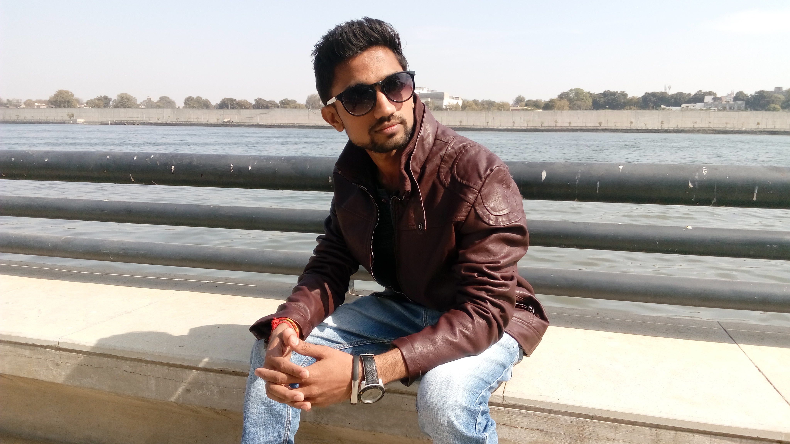

|  |
“Coming from an engineering background, and not falling in the 9-6 trap, I went on to study & make animated films. This landed me in Mumbai, and I got to work with UTV Motion Pictures. This taught me to be independent and take my own decisions, and keep pursuing what I love.
It is somewhere in between guiding students, taking photowalks & making portraits of friends, I found my calling for Wedding Photography.
I photographed my first Wedding in Delhi, the second one in Mumbai & thereafter a Destination Wedding in Samode in 2009, and it has been a fabulous journey ever since! Having Photographed in more than a dozen countries, and gotten an opportunity to travel to even more such fabulous places.
In love with making beautiful films & photographs :)”
|